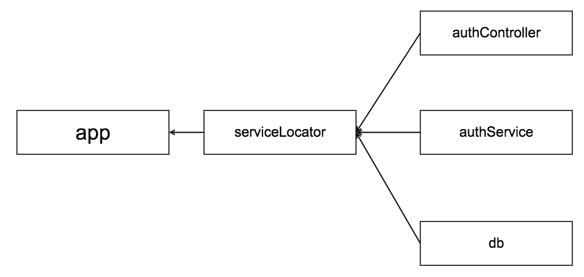

<!DOCTYPE html>
<!--[if IEMobile 7 ]><html class="no-js iem7"><![endif]-->
<!--[if lt IE 9]><html class="no-js lte-ie8"><![endif]-->
<!--[if (gt IE 8)|(gt IEMobile 7)|!(IEMobile)|!(IE)]><!--><html class="no-js"><!--<![endif]-->
<head>
  <meta charset="utf-8">
  <title>
    
  Node.js设计模式 · 第七章 - zerolocust
  

  </title>
  <meta name="author" content="">
  <meta name="description" content="locustchen的博客">

  <meta name="HandheldFriendly" content="True">
  <meta name="MobileOptimized" content="320">
  <meta name="viewport" content="width=device-width, initial-scale=1">
  
  <link href="asset/css/screen.css" media="screen, projection" rel="stylesheet" type="text/css">
  <link href="atom.xml" rel="alternate" title="zerolocust" type="application/atom+xml">
  <script src="asset/js/modernizr-2.0.js"></script>
  <script src="asset/js/jquery.min.js"></script>
  <script src="asset/highlightjs/highlight.pack.js"></script>
  <link href="asset/highlightjs/styles/solarized_light.css" media="screen, projection" rel="stylesheet" type="text/css">
  <script>hljs.initHighlightingOnLoad();</script>

  <style type="text/css">
  .cat-children-p{ padding: 6px 0px;}
  .hljs{background: none;}
  </style>
  <script type="text/javascript">
  var isAddSildbar = true;
  </script>
  <script src="asset/js/octopress.js" type="text/javascript"></script>
</head>
<script type="text/javascript">
//链接新开窗口
function addBlankTargetForLinks () {
  $('a[href^="http"]').each(function(){
      $(this).attr('target', '_blank');
  });
}
$(document).ready(function(event) {
  addBlankTargetForLinks();
});
</script>
<body   >
  <header role="banner"><hgroup>
  <h1><a href="index.html">zerolocust</a></h1>
  
    <h2>locustchen的博客</h2>
  
</hgroup>

</header>
  <nav role="navigation"><ul class="subscription" data-subscription="rss">
  <li><a href="atom.xml" rel="subscribe-rss" title="subscribe via RSS">RSS</a></li>
  
</ul>
  
<form action="http://google.com/search" method="get">
  <fieldset role="search">
    <input type="hidden" name="q" value="site:zerolocusta.github.io" />
    <input class="search" type="text" name="q" results="0" placeholder="Search"/>
  </fieldset>
</form>
  
<ul class="main-navigation">

  <li id=""><a target="self" href="index.html">Home</a></li>

  <li id=""><a target="_self" href="archives.html">Archives</a></li>

</ul>

</nav>
  <div id="main">
    <div id="content"> 
<div>
	<article class="hentry" role="article">
	<header>
			  	<h1 class="entry-title">Node.js设计模式 · 第七章</h1>
				<p class="meta"><time datetime="2017-11-03T10:55:19+08:00" pubdate data-updated="true">2017/11/3 10:55 上午</time></p>
			 </header>
		  	<div class="entry-content">
			  	<h2 id="toc_0">Wiring Modules</h2>

<blockquote>
<p>模块之间的编排设计</p>
</blockquote>

<h3 id="toc_1">Modules and dependencies</h3>

<p>大多数项目中都是多个模块聚合而成的,随着版本迭代,模块的依赖会越来越多,程序越发复杂.如果前期没规划好,那么项目的技术债就会马曼出现,从而变得难以维护和改动.</p>

<p>Node.js模块系统的特性提供了非常优秀的模块组织功能, 将模块作为对象导入的特性很方便将两个相互依赖的模块通过<code>DI</code>, <code>Locator</code>之类的技术进行解耦</p>

<h4 id="toc_2">Cohesion and coupling</h4>

<ul>
<li><code>Cohesion(内聚)</code>: 指机能相关的程序组合成一模块的程度, 或是各机能凝聚的状态或程度</li>
<li><code>Coupling(耦合)</code>: 指组件与组件之间的相互依赖程度.</li>
</ul>

<p>一般来说, 一个组件应该拥有高内聚低耦合的特性.</p>

<h4 id="toc_3">Stateful modules</h4>

<blockquote>
<p>拥有状态的模块</p>
</blockquote>

<p>由于<code>JavaScript</code>中所有元素,包括模块也是对象, 所以创建带有状态的对象也非常简单</p>

<h5 id="toc_4">The Singleton pattern in Node.js</h5>

<blockquote>
<p>单例模式</p>
</blockquote>

<p>得益于<code>Node.js</code>中的模块加载系统, 相同的模块只会加载并缓存一次的特性, 只需要通过<code>module.exports</code>导出对象实例就可以满足单例模式的需求.</p>

<p>例如在<code>db.js</code>中导出</p>

<pre><code class="language-js">// db.js
module.exports = new Database(&#39;mydb&#39;);
</code></pre>

<p>然后在其他模块中只需<code>require(&#39;db.js&#39;)</code>, 就可以获得<code>new Database(&#39;mydb&#39;)</code>的单例.</p>

<p>然而, 并不是所有情况下在整个项目中都能获取到同一个实例, 考虑如下项目目录结构<br/>
<br/>
在<code>packageA</code>和<code>packageB</code>中, 他们各自的<code>node_modules</code>中都存在<code>mydb</code>模块,根据<code>require.resolve算法</code>的特点, 两个<code>package</code>中的文件分别会说获取到各自<code>node_modules</code>中的不同实例,从而导致整个应用中出现了两个单例, 破坏了单例模式的特性.</p>

<blockquote>
<p>引用第二章中模块引入方法的查找特性.</p>

<h4 id="toc_5">The resolving algorithm</h4>

<p><code>require.resolve算法的实现功能点</code><br/>
resolve算法主要解决三种模块引入的路径问题<br/>
        * 文件模块 <br/>
            * 如果模块名由<code>/</code>开头的话, 那么几乎说明这是模块的绝对路径, 直接返回即可. 如果模块名以<code>./</code>或是<code>../</code>那么就认为是相对路径, 开始查找模块<br/>
        * 核心模块<br/>
            * 如果模块名无法标识这是一个核心模块, 那么就会去Node的内嵌核心模块中找, 例如<code>fs</code><br/>
        * 包模块<br/>
            * 如果上述两种方式都找不到该模块, 那么Node会从最相近的目录中查找<code>node_modules</code>这个目录, 如果找不到, 那么继续往上级目录查找, 直到操作系统的根目录.</p>

<p>而文件模块和包模块又有一个模块查找顺序:<br/>
        1. 查找<code>&lt;moduleName&gt;.js</code><br/>
        2. 查找<code>&lt;moduleName&gt;/index.js</code><br/>
        3. 从<code>&lt;moduleName&gt;/package.json</code>中的<code>main</code>属性中指定的文件中查找</p>
</blockquote>

<p>解决这个问题的方法之一, 可以使用<code>global</code>变量去存放单例例如</p>

<pre><code class="language-js">global.db = new Database(&#39;mydb&#39;)
</code></pre>

<p>然而除非必要, 完全不建议修改<code>global</code>变量, 况且很多应用中严格的单例模式不是必须, 在之后的<code>Patterns for wiring modules</code>会介绍另一种模式用于实现严格的单例模式</p>

<h3 id="toc_6">Patterns for wiring modules</h3>

<blockquote>
<p>模块结构的设计模式</p>
</blockquote>

<p>这一节将会通过建立一个HTTP认证服务, 并以此为蓝本将详述各种模块设计模式.</p>

<h4 id="toc_7">Hardcoded dependency</h4>

<p><code>Hardcoded dependency</code>是最常用的模块依赖解决方式, 各模块的状态在模块编写时已经被硬编码.</p>

<h5 id="toc_8">Building an authentication server using hardcoded dependencies</h5>

<p>本节建立的HTTP认证服务以<code>Express</code>作为Http框架, <code>levelup</code>用于存储信息, 并通过<code>JWT</code>生成用户登录态token.</p>

<p>认证服务的模块依赖:<br/>
</p>

<p>并且通过两个<code>HTTP</code>接口进行用户认证:</p>

<ul>
<li><code>POST /login</code>: <code>/login</code>接口通过<code>POST</code>方法接收一个带有<code>username</code>和<code>password</code>的JSON结构, 通过查询<code>leveldb</code>验证用户合法性, 最后将信息用户态以JWT加密返回.</li>
<li><code>GET /checklogin</code>: 从url参数中获取记录用户登录态的<code>token</code>, 验证用户信息.</li>
</ul>

<h6 id="toc_9">The db module</h6>

<p>首先建立从`存储用户信息的数据库接口</p>

<pre><code class="language-js">// db.js
const level = require(&#39;level&#39;);
const sublevel = require(&#39;level-sublevel&#39;);

module.exports = sublevel(
  level(&#39;example-db&#39;, {valueEncoding: &#39;json&#39;})
);
</code></pre>

<p><code>db.js</code>模块导出了一个<code>leveldb</code>实例.</p>

<h6 id="toc_10">The authService module</h6>

<p><code>authService</code>建立用户密码认证与数据之间的连接服务</p>

<pre><code class="language-js
const">const bcrypt = require(&#39;bcrypt&#39;);

const db = require(&#39;./db&#39;);
// 从db中获取users集合
const users = db.sublevel(&#39;users&#39;);
// salt
const tokenSecret = &#39;SHHH!&#39;;

exports.login = (username, password, callback) =&gt; {
  // 尝试从数据库中获取用户信息
  users.get(username, (err, user) =&gt; {
    if(err) return callback(err);
    // 将加密后的password与数据库中加密后的密码进行比对
    bcrypt.compare(password, user.hash, (err, res) =&gt; {
      if(err) return callback(err);
      if(!res) return callback(new Error(&#39;Invalid password&#39;));
      // 登陆成功生成登陆态token
      let token = jwt.encode({
        username: username,
        expire: Date.now() + (1000 * 60 * 60) //1 hour
      }, tokenSecret);
      // 回传token
      callback(null, token);
    });
  });
};

exports.checkToken = (token, callback) =&gt; {
  let userData;
  try {
    //利用密钥解开token
    userData = jwt.decode(token, tokenSecret);
    if (userData.expire &lt;= Date.now()) {
      // 检查token是否超时
      throw new Error(&#39;Token expired&#39;);
    }
  } catch(err) {
    return process.nextTick(callback.bind(null, err));
  }
  // 检查username是否存在
  users.get(userData.username, (err, user) =&gt; {
    if (err) return callback(err);
    callback(null, {username: userData.username});
  });
};
</code></pre>

<h6 id="toc_11">The authController module</h6>

<p>最后是将HTTP请求中的用户参数提取, 并调用<code>authService</code>验证用户.</p>

<pre><code class="language-js">const authService = require(&#39;./authService&#39;);

exports.login = (req, res, next) =&gt; {
  // 从Http Request 中获取username和password
  // 通过authService验证用户
  authService.login(req.body.username, req.body.password,
    (err, result) =&gt; {
      if (err) {
        // 登陆失败, 返回异常
        return res.status(401).send({
          ok: false,
          error: &#39;Invalid username/password&#39;
        });
      }
      // 验证成功返回用户登录态token
      res.status(200).send({ok: true, token: result});
    }
  );
};

exports.checkToken = (req, res, next) =&gt; {
  // 从 HTTP Request 的 URL 参数中获取token
  // 通过authService检测token
  authService.checkToken(req.query.token,
    (err, result) =&gt; {
      if (err) {
        return res.status(401).send({
          ok: false,
          error: &#39;Token is invalid or expired&#39;  
        });
      }
      res.status(200).send({ok: &#39;true&#39;, user: result});
    }
  );
};
</code></pre>

<h6 id="toc_12">The app module</h6>

<p>三个用于支撑用户验证逻辑的模块已经就绪了, 接下来是用于支撑HTTP服务的app模块</p>

<pre><code class="language-js">const Express = require(&#39;express&#39;);
const bodyParser = require(&#39;body-parser&#39;);
const errorHandler = require(&#39;errorhandler&#39;);
const http = require(&#39;http&#39;);

const authController = require(&#39;./lib/authController&#39;);

// 初始化Express实例
let app = module.exports = new Express();
// 添加bodyParser中间件
app.use(bodyParser.json());
// 对接http接口与认证控制器
app.post(&#39;/login&#39;, authController.login);
app.get(&#39;/checkToken&#39;, authController.checkToken);

app.use(errorHandler());
http.createServer(app).listen(3000, () =&gt; {
  console.log(&#39;Express server started&#39;);
});

</code></pre>

<p>至此, HTTP认证服务基本完成, 抽离出<code>Hardcoded dependency</code>的部分</p>

<pre><code class="language-js">// db.js 中
module.exports = sublevel(
  // 数据库文件名被硬编码在此 
  level(&#39;example-db&#39;, {valueEncoding: &#39;json&#39;})
);

// authService.js 中
const db = require(&#39;./db&#39;);
const tokenSecret = &#39;SHHH!&#39;; // token被写死

// authController.js 中
const authService = require(&#39;./authService&#39;); // authService 模块被写死
</code></pre>

<p>目前的模块间依赖<br/>
</p>

<p>硬编码模式优势在于清晰, 模块之间的关系更容易理解, 也是最直观的, 但是考虑以下问题</p>

<ul>
<li>用于存放用户数据的数据库被局限为<code>example-db</code></li>
<li><code>authService</code>使用的数据库局限在<code>level-db</code>, 同时<code>token</code>被写在代码中</li>
<li><code>authController</code>的逻辑也被局限于<code>authService</code>模块</li>
</ul>

<p>实际项目开发中, 测试是很重要的一环, 但是测试和实际生产环境的数据要分开, 当我们要替换数据库进行测试, 或是希望分离并单独测试<code>authService</code>或是<code>authController</code>时, 就需要重新修改代码了.</p>

<h4 id="toc_13">Dependency Injection</h4>

<p>为了解决相关模块之间强依赖性问题, 引入依赖注入作为设计模块的模式.</p>

<p>将上面的三个用于认证服务的<code>db.js</code>, <code>authService.js</code>及<code>authController</code>稍作修改</p>

<ul>
<li><code>db.js</code></li>
</ul>

<pre><code class="language-js">// dbName 从硬编码 转换成通过外部注入
module.exports = function (dbName) {
  return sublevel(
    level(dbName, {
      valueEncoding: &#39;json&#39;
    })
  );
};
</code></pre>

<ul>
<li><code>authService.js</code></li>
</ul>

<pre><code class="language-js">// 数据库与密钥均由外部注入 
module.exports = (db, tokenSecret) =&gt; {
  const users = db.sublevel(&#39;users&#39;);
  const authService = {};
  
  authService.login = ...

  authService.checkToken = ...
  
  return authService;
};
</code></pre>

<ul>
<li><code>authController.js</code> </li>
</ul>

<pre><code class="language-js">// authService 由外部注入
module.exports = (authService) =&gt; {
  const authController = {};
  
  authController.login = ...

  authController.checkToken = ...
  
  return authController;
};
</code></pre>

<p>最后在<code>app.js</code>中整合多个组件</p>

<pre><code>const dbFactory = require(&#39;./lib/db&#39;);
const authServiceFactory = require(&#39;./lib/authService&#39;);
const authControllerFactory = require(&#39;./lib/authController&#39;);

const db = dbFactory(&#39;example-db&#39;);
const authService = authServiceFactory(db, &#39;SHHH!&#39;);
const authController = authControllerFactory(authService);
</code></pre>

<p>将<code>db</code>, <code>authService</code>, <code>authController</code>改为依赖注入后, 解决了原来各模块之间强耦合的问题, 同时也能替换三个模块中的组件, 从而进行分离测试.</p>

<p>目前的模块间依赖(由自底向上组织变为自顶向下聚合)<br/>
</p>

<h4 id="toc_14">Service locator</h4>

<p><code>Service locator</code>类似于桩服务, 各模块通过<code>Service locator</code>以名字为索引将所有相关模块连接起来, </p>

<p><code>Service locator</code>有几种类型, 分别是</p>

<ul>
<li>基于硬编码的服务定位器: 直接在定位器编写时将依赖名与依赖对象硬编码进去, 每次增删依赖时都会直接操作底层, 非常不推荐使用这类<code>Service locator</code>.</li>
<li>基于依赖注入的服务定位器: 各个模块预留注入接口, 最后在应用入口处填充<code>Servic locator</code>, 并注入到各个模块中.</li>
<li>全局服务定位器: 不通过依赖注入的方法注入<code>Service locator</code>, 而是全局引用一个单例, <code>require</code>当然也是一个全局服务定位器.</li>
</ul>

<h5 id="toc_15">Refactoring the authentication server to use a service locator</h5>

<blockquote>
<p>通过<code>service locator</code>改造HTTP认证服务器</p>
</blockquote>

<p>在改造各个模块之前, 首先要编写用于定位和发现服务的中心模块</p>

<ul>
<li><code>serviceLocator.js</code>(这里的实现使用了惰性初始化的模式, 在获取依赖时才生成实例)</li>
</ul>

<pre><code class="language-js">module.exports = () =&gt; {
  // 用于存放依赖名与依赖实例
  const dependencies = {};
  // 存放依赖名和生成依赖实例的工厂函数
  const factories = {};
  const serviceLocator = {};
  
  serviceLocator.factory = (name, factory) =&gt; {
    // 注册工厂函数
    factories[name] = factory;
  };
  
  serviceLocator.register = (name, instance) =&gt; {
    // 注册依赖实例
    dependencies[name] = instance;
  };
  // 用于获取依赖实例
  serviceLocator.get = (name) =&gt; {
    if (!dependencies[name]) {
      // 假如所需依赖未初始化
      const factory = factories[name];
      // 通过工厂函数初始化实例
      dependencies[name] = factory &amp;&amp; factory(serviceLocator);
      if (!dependencies[name]) {
        throw new Error(&#39;Cannot find module: &#39; + name);
      }
    }
    return dependencies[name];
  };

  return serviceLocator;
};
</code></pre>

<p>随后分别改动<code>db</code>, <code>authService</code>和<code>authController</code></p>

<ul>
<li><code>db.js</code></li>
</ul>

<pre><code class="language-js">module.exports = (serviceLocator) =&gt; {
  // 通过serviceLocator.get获取数据库文件名
  const dbName = serviceLocator.get(&#39;dbName&#39;);

  return sublevel(
    level(dbName, {valueEncoding: &#39;json&#39;})
  );
};

</code></pre>

<ul>
<li><code>authService</code></li>
</ul>

<pre><code class="language-js">module.exports = (serviceLocator) =&gt; {
  // 通过serviceLocator获取数据库实例及salt
  const db = serviceLocator.get(&#39;db&#39;);
  const tokenSecret = serviceLocator.get(&#39;tokenSecret&#39;);
  
  const users = db.sublevel(&#39;users&#39;);
  const authService = {};
  
  authService.login = ...

  authService.checkToken = ...
  
  return authService;
};
</code></pre>

<ul>
<li><code>authController</code></li>
</ul>

<pre><code class="language-js">module.exports = (serviceLocator) =&gt; {
  const authService = serviceLocator.get(&#39;authService&#39;);
  const authController = {};
  
  authController.login = ...

  authController.checkToken = ...
  
  return authController;
};
</code></pre>

<ul>
<li>最后在<code>app.js</code>出聚合多个模块</li>
</ul>

<pre><code class="language-js">const svcLoc = require(&#39;./lib/serviceLocator&#39;)();

svcLoc.register(&#39;dbName&#39;, &#39;example-db&#39;);
svcLoc.register(&#39;tokenSecret&#39;, &#39;SHHH!&#39;);
svcLoc.factory(&#39;db&#39;, require(&#39;./lib/db&#39;));
svcLoc.factory(&#39;authService&#39;, require(&#39;./lib/authService&#39;));
svcLoc.factory(&#39;authController&#39;, require(&#39;./lib/authController&#39;));

const authController = svcLoc.get(&#39;authController&#39;);
</code></pre>

<p>目前的项目结构变成了<br/>
</p>

<h4 id="toc_16">Dependency Injection container</h4>

<p>在<code>Dependency Injection</code>与<code>Service locator</code>两种模式中, 都要手动将多个模块关联起来, <code>Service locator</code>模式还需要给多个模块注入<code>Service locator</code><br/>
本节利用<code>Dependency Injection</code>模式并添加依赖注入容器, 根据参数名自动注入依赖</p>

<p><code>db</code>, <code>authService</code>, <code>authController</code>三个模块的代码与<code>Dependency Injection</code>章节的代码一模一样.</p>

<p>需要编写新的<code>diContainer</code>模块</p>

<ul>
<li><code>diContainer.js</code></li>
</ul>

<pre><code class="language-js">&quot;use strict&quot;;
// fnArgs 模块用于解析参数的名称
const fnArgs = require(&#39;parse-fn-args&#39;);

module.exports = () =&gt; {
  // 存放依赖实例
  const dependencies = {};
  const factories = {};
  const diContainer = {};

  diContainer.factory = (name, factory) =&gt; {
    factories[name] = factory;
  };

  diContainer.register = (name, dep) =&gt; {
    dependencies[name] = dep;
  };

  diContainer.get = (name) =&gt; {
    if (!dependencies[name]) {
      const factory = factories[name];
      // 利用inject函数生成模块实例
      dependencies[name] = factory &amp;&amp;
        diContainer.inject(factory);
      if (!dependencies[name]) {
        throw new Error(&#39;Cannot find module: &#39; + name);
      }
    }
    return dependencies[name];
  };
  // 自动依赖注入函数
  diContainer.inject = (factory) =&gt; {
    // fnArgs(factory) 返回一个参数名称列表
    const args = fnArgs(factory)
      .map(function (dependency) {
        // 根据参数名获取依赖实例
        return diContainer.get(dependency);
      });
    return factory.apply(null, args);
  };

  return diContainer;
};
</code></pre>

<h4 id="toc_17">小结</h4>

<ul>
<li>Hardcoded dependency

<ul>
<li>优点: 直观, 容易编写</li>
<li>缺点: 不便于分离测试, 模块间相互依赖强</li>
</ul></li>
<li>Dependency Injection

<ul>
<li>优点: 模块之间松耦合</li>
<li>缺点: 不够直观, 增加了复杂度, 需要手动注入依赖</li>
</ul></li>
<li>Service Locator

<ul>
<li>优点: 模块间通过Locator解耦合</li>
<li>缺点: 过度依赖Service Locator, 随时需要确保可用性, 模块间关系不清晰</li>
</ul></li>
<li>Dependency Injection Container

<ul>
<li>优点: 松耦合, 自动注入</li>
<li>缺点: 不够直观<br/></li>
</ul></li>
</ul>

<h3 id="toc_18">Wiring plugins</h3>

<p>插件是一种非常完美的模块组织方法, 拥有最小化的功能和最自由的可组合性<br/>
本节将探讨</p>

<ul>
<li>以插件的形式提供<code>service</code></li>
<li>如何将<code>plugin</code>插入到应用的工作流中</li>
</ul>

<h4 id="toc_19">Plugins as packages</h4>

<p>将插件作为npm package发布到npm上, 并利用npm进行插件版本管理和分发, 像<code>Express</code>和它的中间件使用的就是这种模式.这样做有几点好处</p>

<ul>
<li>npm包能很好管理插件的版本和依赖</li>
<li>每个插件都能有自己的私有的包</li>
<li>在插件中使用其他插件式依赖结构清晰

<ul>
<li>试想在没有使用package管理插件的情况下, 项目结构如下
当<code>moduleA</code>需要使用<code>moduleB</code>时, <code>require(&#39;../../componentB/moduleB&#39;);</code>, 而当<code>component</code>作为<code>npm package</code>发布时, 只需要使用<code>require(&#39;componentB/module&#39;);</code>即可.</li>
</ul></li>
</ul>

<h4 id="toc_20">Plugin-controlled vs application-controlled extension</h4>

<p>插件的使用方法设计也有两种不同的方法, </p>

<ul>
<li>Explicit extension(显式扩展)</li>
<li>Extension through Inversion of Control (控制反转)</li>
</ul>

<blockquote>
<p><br/>
通过插件(组件)接受者和提供者的关系区分显示扩展还是控制反转</p>
</blockquote>

<p>1.<code>Explicit extension</code>对应的是<code>Plugin-controlled</code><br/>
2.<code>Extension through Inversion of Control</code>对应的是<code>application-controlled extension</code></p>

<p>两段代码展示这两种概念:</p>

<ul>
<li><code>Plugin-controlled</code></li>
</ul>

<pre><code class="language-js">//在 app.js 中
const app = express();
const plugin = require(&#39;thePlugin&#39;);
plugin(app);

//在 thePlugin.js 中
module.exports = function plugin(app) {
  app.get(&#39;/newRoute&#39;, function (req, res) { ...
  })
};
</code></pre>

<ul>
<li><code>Application-controlled extension</code></li>
</ul>

<pre><code class="language-js">//在 app.js 中的代码
const app = express();
const plugin = require(&#39;thePlugin&#39;)();
app[plugin.method](plugin.route, plugin.handler); 

//在 thePlugin.js 中的代码
module.exports = function plugin() {
  return {
    method: &#39;get&#39;,
    route: &#39;/newRoute&#39;,
    handler: function (req, res) { ...
    }
  }
}
</code></pre>

<p><code>Plugin-controlled</code> 与 <code>Application-controlled extension</code>的区别:</p>

<ul>
<li><code>Plugin-controlled</code>模式的设计更直观, 而且能更好地扩展插件的功能</li>
<li><code>Application-controlled extension</code>模式依赖于主框架提供能添加插件的API</li>
</ul>

			</div>

		
	  
		<footer>
		 <p class="meta">

			
			<span class="categories">
			 
			</span>
		    </p>
		    <p class="meta">
		      
		 </p>
	    
		<div class="sharing">
		  
          

          

		</div>

	    <p class="meta">
	    
	        <a class="basic-alignment left" href="15101331051720.html" 
	        title="Previous Post: JavaScript高级程序设计 · 4、5、6 章">&laquo; JavaScript高级程序设计 · 4、5、6 章</a>
	    
	    
	        <a class="basic-alignment right" href="15093607735574.html" 
	        title="Next Post: JavaScript高级程序设计 · 1、2、3、20章">JavaScript高级程序设计 · 1、2、3、20章 &raquo;</a>
	    
	    </p>
	  </footer>
	</article>
</div>
 <aside class="sidebar"> 

	<section>
	  <h1>Categories</h1>
	  <ul id="recent_posts">
	  
	        
	      </li>
	   
	  </ul>
	</section>
	<section>
	  <h1>Recent Posts</h1>
	  <ul id="recent_posts">
	  
	      
		      <li class="post">
		        <a href="15101331051720.html">JavaScript高级程序设计 · 4、5、6 章</a>
		      </li>
	     
	  
	      
		      <li class="post">
		        <a href="15096777193883.html">Node.js设计模式 · 第七章</a>
		      </li>
	     
	  
	      
		      <li class="post">
		        <a href="15093607735574.html">JavaScript高级程序设计 · 1、2、3、20章</a>
		      </li>
	     
	  
	      
		      <li class="post">
		        <a href="15087314678145.html">Node.js设计模式 · 第六章</a>
		      </li>
	     
	  
	      
		      <li class="post">
		        <a href="15078961128669.html">Node.js设计模式 · 第五章</a>
		      </li>
	     
	  
	      
	  
	      
	  
	      
	  
	      
	  
	      
	   
	  </ul>
	</section>
	
</aside> </div></div>
  <footer role="contentinfo"><p>
  Copyright &copy; 2017 -  -
  <span class="credit">Powered by <a target="_blank" href="https://zerolocusta.github.io">zerolocusta</a> &nbsp;&nbsp; Theme by <a href="http://octopress.org">Octopress</a></span>
</p>

</footer>

  
    

<script src="asset/chart/all-min.js"></script><script type="text/javascript">$(function(){    var mwebii=0;    var mwebChartEleId = 'mweb-chart-ele-';    $('pre>code').each(function(){        mwebii++;        var eleiid = mwebChartEleId+mwebii;        if($(this).hasClass('language-sequence')){            var ele = $(this).addClass('nohighlight').parent();            $('<div id="'+eleiid+'"></div>').insertAfter(ele);            ele.hide();            var diagram = Diagram.parse($(this).text());            diagram.drawSVG(eleiid,{theme: 'simple'});        }else if($(this).hasClass('language-flow')){            var ele = $(this).addClass('nohighlight').parent();            $('<div id="'+eleiid+'"></div>').insertAfter(ele);            ele.hide();            var diagram = flowchart.parse($(this).text());            diagram.drawSVG(eleiid);        }    });});</script>
<script type="text/javascript" src="https://cdnjs.cloudflare.com/ajax/libs/mathjax/2.7.1/MathJax.js?config=TeX-AMS-MML_HTMLorMML"></script><script type="text/x-mathjax-config">MathJax.Hub.Config({TeX: { equationNumbers: { autoNumber: "AMS" } }});</script>

</body>
</html>